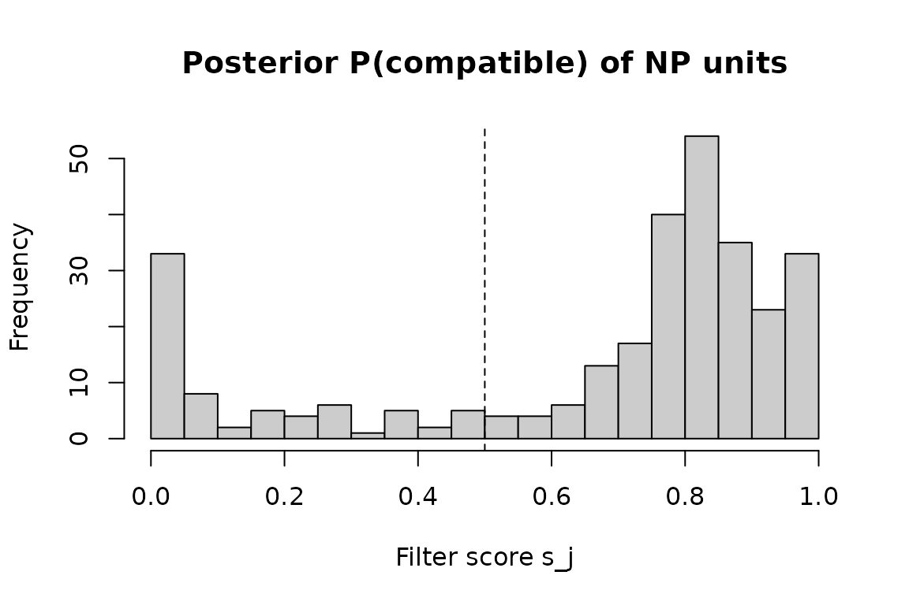

Model and algorithm
The target model is
.
Contaminated units follow
Poisson()
with
under M0/Mjoint, or a rival Poisson regression
under M1.
The log link has no convenient conjugate augmentation, so
is updated by a Metropolis–Hastings step whose proposal is the Laplace
(Gaussian) approximation to its full conditional: Newton/IRLS iterations
(mixture_control(irls_steps = 3)) started at the current
value locate the mode, and the proposal covariance is the inverse
negative Hessian there. Once the Newton iterations converge, the
proposal does not depend on the current state and the step is an exact
independence sampler with high acceptance. The acceptance rate is
reported by summary().
Example
beta <- c(1.2, 0.5, -0.4)
d <- simulate_mixture_data("poisson", n_prob = 300, n_nonprob = 300,
contamination = 0.25, beta = beta, x_shift = 2,
seed = 301)
fit <- mixture_fit(y ~ x1 + x2, d$prob, d$nonprob, family = "poisson",
n_iter = 1500, burnin = 500, seed = 1)
pooled <- baseline_fit(y ~ x1 + x2, rbind(d$prob, d$nonprob[names(d$prob)]),
family = "poisson", n_iter = 1500, burnin = 500, seed = 1)
rbind(truth = beta, naive_pooled = coef(pooled), mixture = coef(fit))
#> (Intercept) x1 x2
#> truth 1.200000 0.5000000 -0.4000000
#> naive_pooled 1.287587 0.3150918 -0.3425359
#> mixture 1.187216 0.4714149 -0.4633464
summary(fit)
#> Bayesian contamination-mixture fit (bayesSampleMix)
#> Call: mixture_fit(formula = y ~ x1 + x2, prob_data = d$prob, nonprob_data = d$nonprob,
#> family = "poisson", n_iter = 1500, burnin = 500, seed = 1)
#> Family: Poisson (log link)
#> Model: Mjoint (contaminating density + covariate leverage term)
#> Leverage covariates: x1, x2 (inflation c = 2.5)
#> Samples: n_P = 300, n_NP = 300
#> MCMC: 1500 iterations, burn-in 500, thin 1 -> 1000 draws
#> Metropolis-Hastings acceptance rate (target block): 0.979
#>
#> Target-model coefficients (posterior; 95% credible intervals):
#> mean sd 2.5% 50% 97.5% ess mcse
#> (Intercept) 1.190 0.0289 1.130 1.190 1.240 646 0.001140
#> x1 0.471 0.0247 0.425 0.472 0.521 820 0.000861
#> x2 -0.463 0.0222 -0.508 -0.463 -0.421 715 0.000832
#>
#> Contamination:
#> mean sd 2.5% 50% 97.5% ess mcse
#> contamination 0.338 0.0393 0.261 0.338 0.419 315 0.00222
#> contamination_realized 0.337 0.0307 0.280 0.337 0.400 289 0.00181
#>
#> Filter scores of NP units (s_j = posterior P(compatible)):
#> expected compatible units: 198.7 of 300; units with s_j < 0.5: 71; mean entropy: 0.393The target coefficients are recovered, while naive pooling attenuates
them. As in the logistic case, the contamination fraction is
over-estimated (true value 0.25): the background
Poisson()
density also describes many compatible units reasonably well, and the
Mjoint covariate term allocates some compatible units in
the tails of the P covariate distribution to the contaminating
component. In 10 simulated data sets of this design the posterior mean
of
averaged about 0.40 under both M0 and Mjoint,
but about 0.26 under M1, whose rival regression matches the
contaminating mechanism used here. The error is conservative (it reduces
precision, not accuracy of the target coefficients). Contaminated units
whose counts happen to be consistent with the target model (their mean
function intersects the target mean function) cannot be identified,
which limits the AUC:
filter_auc(1 - d$nonprob$contaminated, filter_scores(fit))
#> [1] 0.937837
plot(fit, type = "scores")
Posterior expected counts for new covariate values:
predict(fit, data.frame(x1 = c(-1, 0, 1), x2 = 0))
#> fit lwr upr
#> 1 2.047859 1.877229 2.229083
#> 2 3.279309 3.091519 3.460982
#> 3 5.254459 4.958817 5.559524Sensitivity to the IRLS setting
The original implementation used three Newton steps. Increasing them makes the proposal state-independent to numerical precision; on well-behaved data the results are essentially identical:
fit25 <- mixture_fit(y ~ x1 + x2, d$prob, d$nonprob, family = "poisson",
n_iter = 1500, burnin = 500, seed = 1,
control = mixture_control(irls_steps = 25))
rbind(irls_3 = coef(fit), irls_25 = coef(fit25))
#> (Intercept) x1 x2
#> irls_3 1.187216 0.4714149 -0.4633464
#> irls_25 1.187216 0.4714149 -0.4633464
c(irls_3 = fit$acceptance, irls_25 = fit25$acceptance)
#> irls_3 irls_25
#> 0.979 0.979